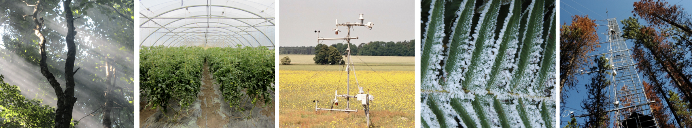

| Week | Wednesday | Friday |
|---|---|---|
| Sep 06 - Sep 08 | Introduction | Energy |
| Sep 13 - Sep 15 | Radiation Laws | Shortwave Radiation |
| Sep 20 - Sep 22 | Surface geometry and albedo | Surface geometry and albedo cont.Radiation transfer in plant canopies |
| Sep 27 - Sep 29 | Long-wave radiation | Radiation budget of Planet Earth Lecture Quiz 1 |
| Oct 04 - Oct 06 | Net radiation of land surfaces. | Heat and temperature |
| Oct 11 - Oct 13 | Heat conduction Lecture Quiz 2 |
Thermal admittance. |
| Oct 18 - Oct 20 | Atmospheric Humidity. | Laminar boundary layers |
| Oct 25 - Oct 27 | Image of an apple orchard | Animal microclimate: basic principles, wind chill and thermal regulation |
| Nov 01 - Nov 03 | Lapse rates and stability Lecture Quiz 3 |
Local winds |
| Nov 08 - Nov 10 | Turbulence and convection | Turbulent exchange |
| Nov 15 - Nov 17 | – | Wind breaks and windthrow |
| Nov 22 - Nov 24 | Frost protection Lecture Quiz 4 |
Energy balance of ecosystems |
| Nov 29 - Dec 01 | Eddy covariance measurements of evapotranspiration | Rain over a Scottish catchment |
| Dec 06 - Dec 08 | Measuring CO2 fluxes over a rice field Lecture Quiz 5 |
– |
Overview

Lecture topics and quiz dates are listed in Table 1 below, and the relevant lecture slides can be found in the sidebar on the left. Lectures are held in person Wednesday & Friday, 9:30 - 11:00 in Friedman Building, Room 153. If you are unable to attend in-person, remote attendance is available on on zoom and recordings will be posted here afterwards.
- Note: Streaming/recording is provided as a courtesy and the quality of online lectures is not guaranteed.
iClicker
Lectures will have a embedded questions that can be answered using iClicker
- Lecture participation points are only available during the lecture.
Quizzes
Quizzes will held on the dates listed in the schedule below. Note dates are subject to change & will be announced in class the week before.
Readings?
There is no textbook for the course. All materials for lecture will be provided to you. Typically, materials will be introduced in lecture first, but if any readings are assigned, you will be given a pdf copy of the material.